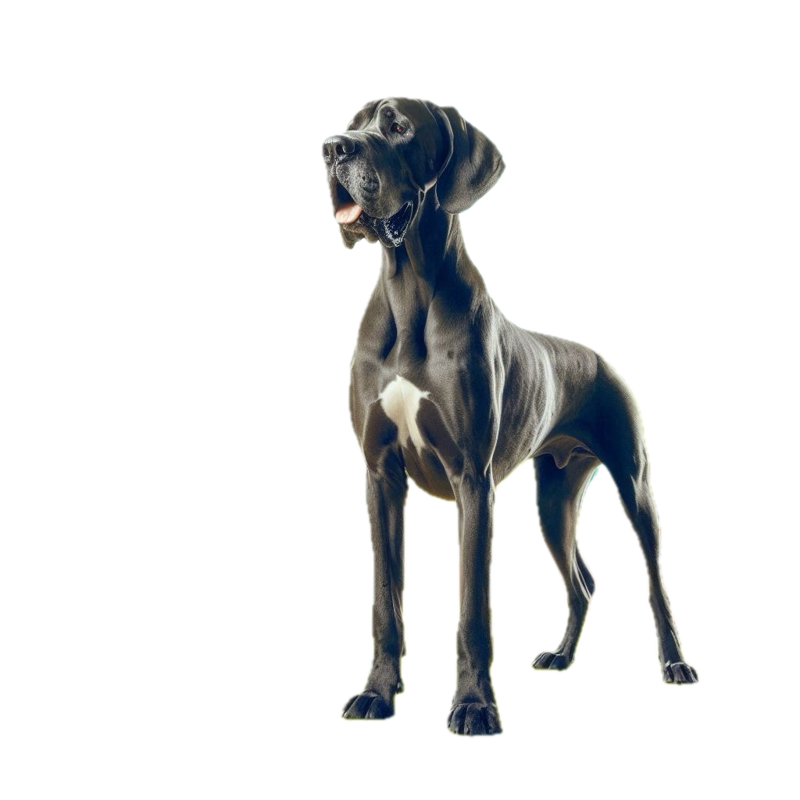
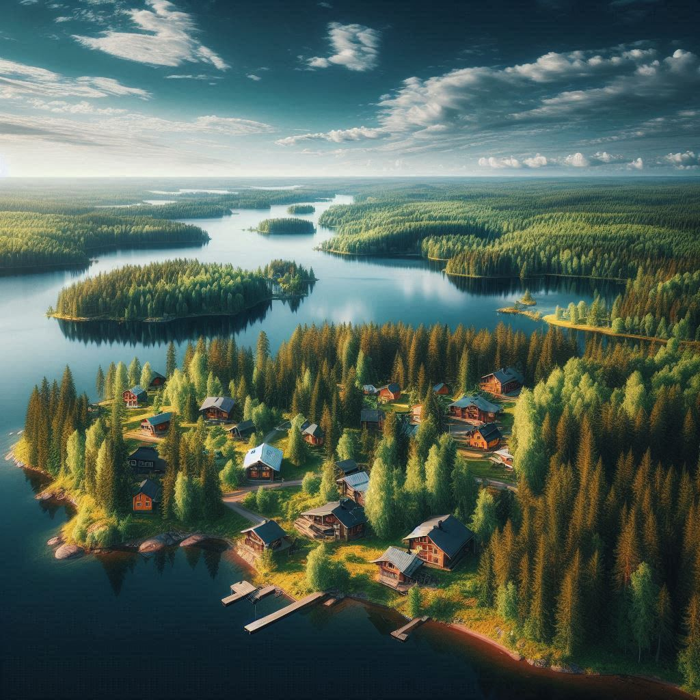
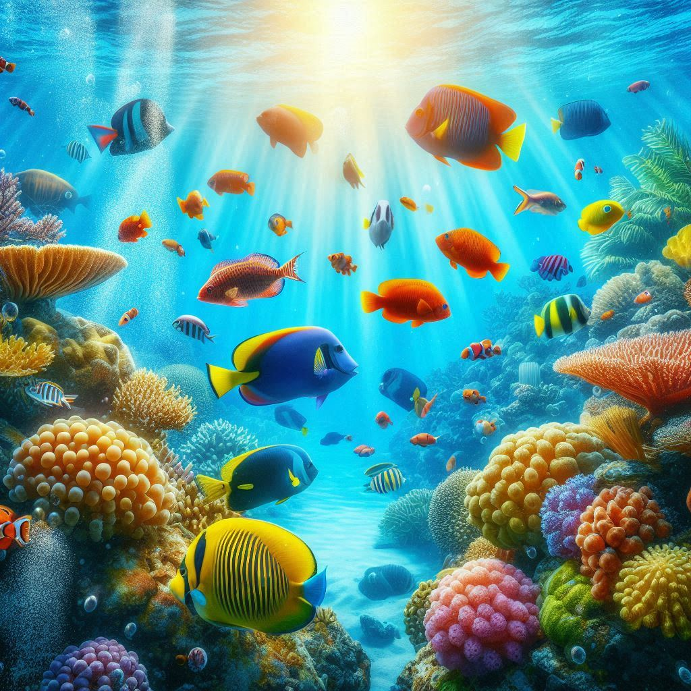

Pidän hevosista ja eläimistä yleensäkin. Tanskandoggi on suosikki koirarotuni. Rodun harmaan värin virallinen määritelmä on sininen.
Kotimaalla on iso merkitys minulle. Suomessa on upea ja puhdas luonto sekä henkeäsalpaavan kauniit maisemat.
Uiminen ja vedessä oleminen on minulle luontaista. Merellinen vedenalainen maailma onkin mielenkiintoinen.
